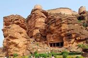

Tourist Guide
Badami

Badami, formerly known as Vatapi, is a town and headquarters of a taluk by the same name, in the Bagalkot district of Karnataka, India. It was the regal capital of the Badami Chalukyas from AD 540 to 757. It is famous for its rock cut structural temples. It is located in a ravine at the foot of a rugged, red sandstone outcrop that surrounds Agastya lake. Badami has been selected as one of the heritage cities for HRIDAY - Heritage City Development and Augmentation Yojana scheme of Government of India.Badami Chalukyas was founded in AD 540 by Pulakeshin I (AD 535–566), an early ruler of the Chalukyas is generally regarded as the founder of the Early Chalukya line. An inscription record of this king engraved on a boulder in Badami records the fortification of the hill above "Vatapi" in 544. Pulakeshin's choice of this location for his capital was no doubt dedicated by strategic considerations since Badami is protected on three sides by rugged sandstone cliffs. His sons Kirtivarman I (AD 567–598) and his brother Mangalesha (AD 598–610) constructed the cave temples.Kirtivarman I strengthened Vatapi and had three sons Pulakeshin II, Vishnuvardhana and Buddhavarasa, who at his death were minors, thus making them ineligible to rule, so Kirtivarman I's brother Mangalesha took the throne and tried to establish rule, only to be killed by Pulakeshin II who ruled between AD 610 to 642. Vatapi was the capital of the Early Chalukyas, who ruled much of Karnataka, Maharashtra, parts of Tamil Nadu and Andhra Pradesh between the 6th and 8th centuries. The greatest among them was Pulakeshin II (AD 610–642) who defeated many kings including the Pallavas of Kanchipuram.
Old Kannada inscription of Chalukya King Mangalesha dated 578 CE at Badami cave temple no.3
The rock-cut Badami Cave Temples were sculpted mostly between the 6th and 8th centuries.